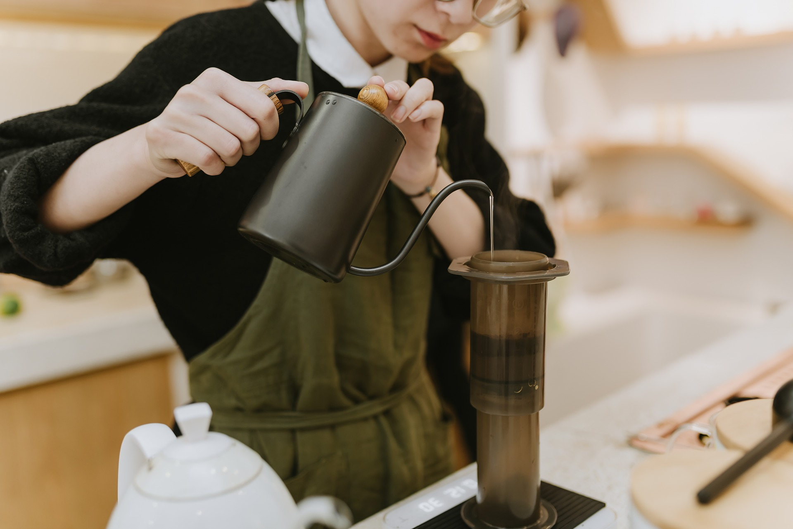
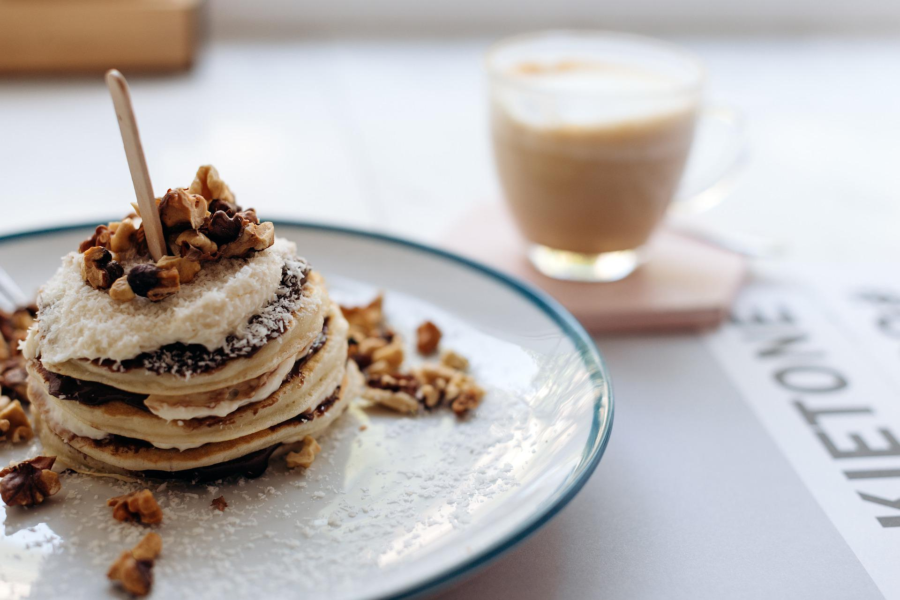

Grains de cafe
home |
news |
menu |
official sns |
Coffee &
Pancakes


News Topics
2022/8/1 - 今月のコーヒー[8月]
2022/7/20 - 夏の期間限定フレーバーが登場！
2022/7/14 - Grains de cafeのオリジナルグッズができました
2022/7/10 - お得なポイントカードのご案内
2022/7/5 - 季節のパンケーキ
2022/7/3 - 世界のコーヒー豆フェア (～7/31まで)
2022/7/1 - 今月のコーヒー[7月]
2022/6/21 - 紙製ストローへの変更のお知らせ
2022/6/12 - パンケーキのテイクアウトが可能になりました！
2022/6/1 - 今月のコーヒー[6月]
... show more
Menu
coffee
pancake
sidemenu